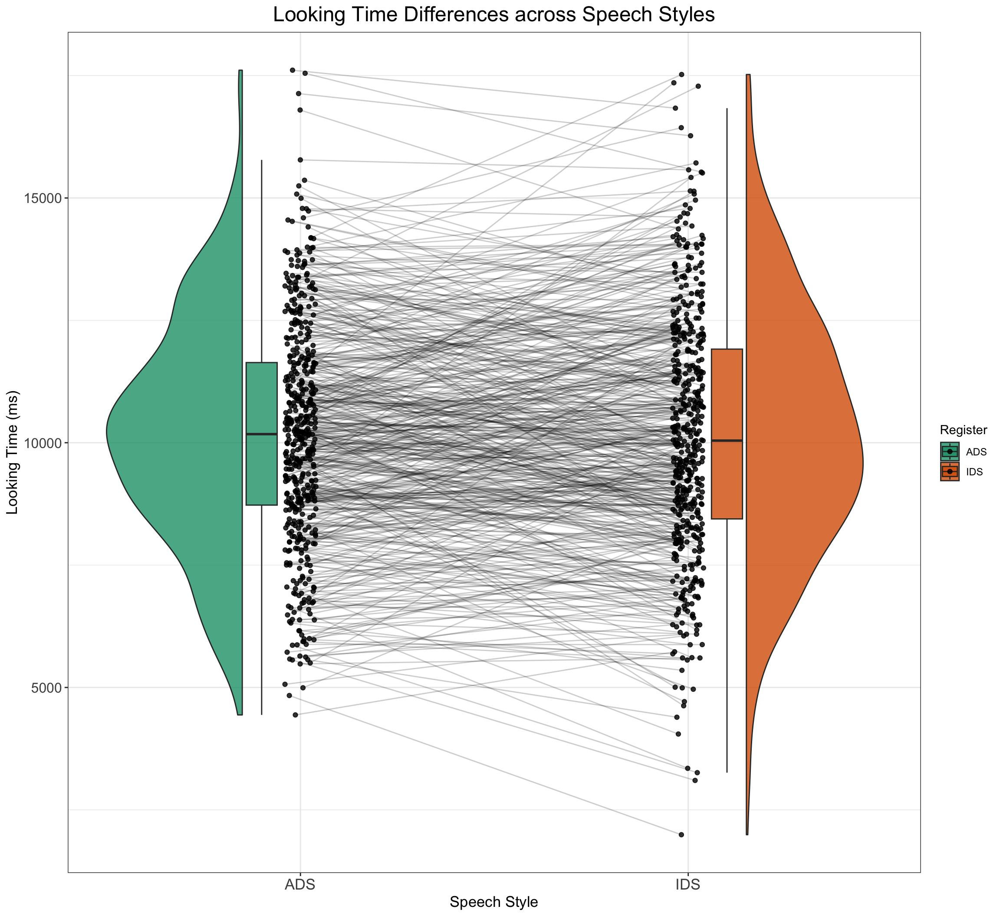
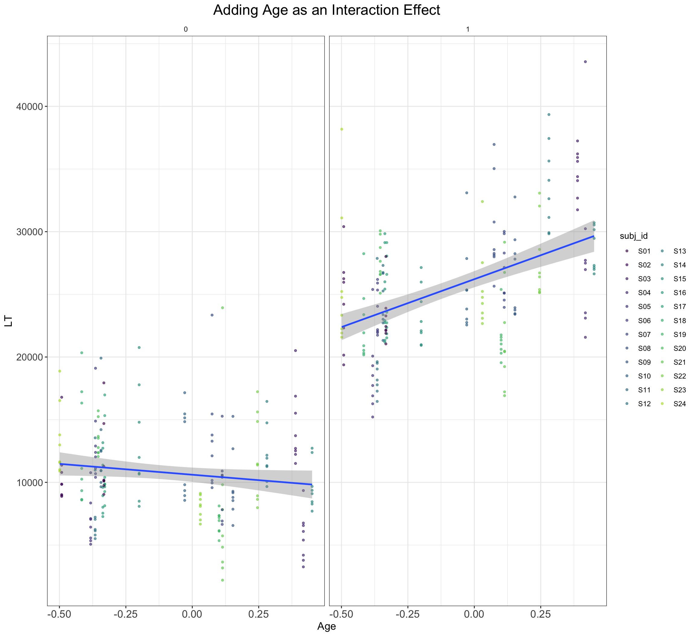

# set up the custom data simulation function
SimulateLTData <- function(
n_subj = 24, # number of subjects
n_ADS = 8, # number of ingroup stimuli
n_IDS = 8, # number of outgroup stimuli
mean_intercept = 7000, # grand mean
mean_slope = 2000, # effect of category
item_varyingintercept = 200, # by-item random intercept sd
subject_varyingintercept = 2000, # by-subject random intercept sd
subject_varyingslope = 1000, # by-subject random slope sd
rho = 0.2, # correlation between intercept and slope
sigma = 500) { # residual (standard deviation)
items <- data.frame(
#item_id = seq_len(n_ADS + n_IDS),
Register = rep(c("IDS", "ADS"), c(n_ADS, n_IDS)),
O_0i = rnorm(n = n_ADS + n_IDS, mean = 0, sd = item_varyingintercept)) %>%
mutate(item_id = faux::make_id(nrow(.), "I")) %>%
mutate(SpeechStyle = recode(Register, "ADS" = -0.5, "IDS" = +0.5))
# simulate a sample of subjects
# sample from a multivariate random distribution
subjects <- faux::rnorm_multi(
n = n_subj,
mu = 0, # means for random effects are always 0
sd = c(subject_varyingintercept, subject_varyingslope), # set SDs
r = rho, # set correlation, see ?faux::rnorm_multi
varnames = c("T_0s", "T_1s")
) %>%
mutate(subj_id = faux::make_id(nrow(.), "S"))
ParameterValues <- crossing(subjects, items) %>%
mutate(e_si = rnorm(nrow(.), mean = 0, sd = sigma)) %>%
dplyr::select(subj_id, item_id, Register, SpeechStyle, everything())
ParameterValues %>%
mutate(LT = mean_intercept + T_0s + O_0i + (mean_slope + T_1s) * SpeechStyle + e_si) %>%
mutate(LT = LT + rexp(nrow(.), rate = 0.0003)) %>%
dplyr::select(subj_id, item_id, Register, SpeechStyle, LT)
}Solution to Exercise I
1 Solution to Exercise Ia
- How would you adapt our code to generate a dataset with 500 participants and no effect of SpeechStyle?
With our new SimulateLTData() function, the answer here is fairly straightforward! We can simply specify that we want to simulate 500 subjects and want a mean slope of 0, like so: SimulateLTData(n_subj = 500, mean_slope = 0).
LTDataSimulated <- SimulateLTData(n_subj = 500, mean_slope = 0)
LTDataSimulated %>%
group_by(subj_id, Register) %>%
dplyr::summarise(medLT = mean(LT)) %>%
ggplot(aes(x = Register, y = medLT, fill = Register)) + geom_rain(alpha = 0.8,
rain.side = "f1x1", id.long.var = "subj_id", point.args.pos = list(position = position_jitter(width = 0.04,
height = 0, seed = 42)), line.args.pos = list(position = position_jitter(width = 0.04,
height = 0, seed = 42))) + scale_fill_brewer(palette = "Dark2") +
ggtitle("Looking Time Differences across Speech Styles") +
xlab("Speech Style") + ylab("Looking Time (ms)") + scale_color_manual(values = viridis(n = 27)) +
plot_theme`summarise()` has grouped output by 'subj_id'. You can override using the
`.groups` argument.Warning: Duplicated aesthetics after name standardisation: alphaWarning: Using the `size` aesthetic with geom_polygon was deprecated in ggplot2 3.4.0.
ℹ Please use the `linewidth` aesthetic instead.
2 Solution to Exercise Ib:
Exercise Ib: We might expect the IDS preference effect to change with infant age, such that older infants listen longer to IDS over ADS than younger infants. How would you add a positive interaction effect of (cross-sectional) age as a predictor to the model (hint: it involves randomly sampling age for each child and adding an effect to the simulation code and model)?
The question here involves adding infant age as an interaction effect with SpeechStyle. We will approach this question by modifying the code that simulates subject-level data. Here, we will sample an age variable and pretend that we have standardised age so that its values fall between -0.5 and 0.5. We thus randomly sample and age to assign one age to each subject. We also need to specify a slope value for the influence of subject ag and place it in the start of the function; we will add subject_age = 200. Lastly, we need to change how we sum the values together, so that age has an effect on looking times, but also that the influence of age exerts different effects across the two speech styles.
# set up the custom data simulation function
SimulateLTDataWithAge <- function(
n_subj = 24, # number of subjects
n_ADS = 8, # number of ingroup stimuli
n_IDS = 8, # number of outgroup stimuli
beta_0 = 7000, # grand mean
beta_1 = 15000, # effect of category
beta_as = 10000,
S_as = 50,
item_sd = 200, # by-item random intercept sd
tau_0 = 2000, # by-subject random intercept sd
tau_1 = 1000, # by-subject random slope sd
rho = 0.2, # correlation between intercept and slope
sigma = 500) { # residual (standard deviation)
items <- data.frame(
#item_id = seq_len(n_ADS + n_IDS),
Register = rep(c("IDS", "ADS"), c(n_ADS, n_IDS)),
O_0i = rnorm(n = n_ADS + n_IDS, mean = 0, sd = item_sd)) %>%
mutate(item_id = faux::make_id(nrow(.), "I")) %>%
mutate(SpeechStyle = recode(Register, "ADS" = 0, "IDS" = 1))
# simulate a sample of subjects
# sample from a multivariate random distribution
subjects <- faux::rnorm_multi(
n = n_subj,
mu = 0, # means for random effects are always 0
sd = c(tau_0, tau_1, S_as), # set SDs
r = rho, # set correlation, see ?faux::rnorm_multi
varnames = c("T_0s", "T_1s", "S_as")
) %>%
mutate(subj_id = faux::make_id(nrow(.), "S")) %>%
mutate(age_subj = runif(n_subj, min = -0.5, max = 0.5))
ParameterValues <- crossing(subjects, items) %>%
mutate(e_si = rnorm(nrow(.), mean = 0, sd = sigma)) %>%
dplyr::select(subj_id, item_id, Register, SpeechStyle, age_subj, S_as, everything())
ParameterValues %>%
mutate(LT = beta_0 + T_0s + O_0i + (beta_1 + T_1s) * SpeechStyle + ((beta_as + S_as) * age_subj * SpeechStyle) + e_si) %>%
mutate(LT = LT + rexp(nrow(.), rate = 0.0003)) %>%
dplyr::select(subj_id, item_id, Register, SpeechStyle, age_subj, LT)
}2.1 Visualisation of the Solution as Sanity Check
dat_sim <- SimulateLTDataWithAge()
dat_sim %>%
ggplot() + geom_point(aes(y = LT, x = age_subj, color = subj_id),
alpha = 0.6, size = 1) + geom_smooth(method = "lm", se = TRUE,
formula = y ~ x, aes(y = LT, x = age_subj)) + ggtitle("Adding Age as an Interaction Effect") +
xlab("Age") + facet_wrap(~SpeechStyle) + scale_color_manual(values = viridis(n = 27)) +
plot_theme